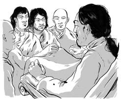
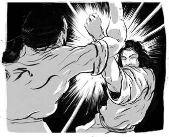
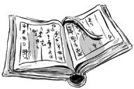

Năm 1219, Thành Cát Tư Hãn, lúc đó năm mươi bảy tuổi, và đã đưa ra quyết định rất quan trọng.
Ông cho gọi bốn người con tới.
Ông muốn biết họ nghĩ gì. Ông yêu cầu người con cả Truật Xích nói trước. Bằng cách chọn Truật Xích nói trước, có lẽ Thành Cát Tư Hãn đã lộ ý muốn nhường ngôi cho ai.

/Người con thứ hai, Sát Hợp Đài, không phục. Cậu muốn biết tại sao cha mình lại chọn Truật Xích, trong khi đó Truật Xích không phải con đẻ. Cậu nói, Truật Xích là con của người Miệt Nhi Khất đã bắt cóc mẹ của họ vài chục năm trước.
Hai người xảy ra xô xát.

Thành Cát Tư Hãn nói với Sát Hợp Đài rằng lăng mạ Truật Xích tức là đang lăng mạ chính mẹ mình. Ông nhắc nhở các con việc dựng nên Đế quốc Mông Cổ gian khó chừng nào. Ông kể về cuộc sống trước đây khi ai cũng tranh giành với nhau.
Thành Cát Tư Hãn biết rằng nếu ông trao cả đế quốc cho một trong hai người, sẽ có xung đột giữa những người anh em. Ông quyết định người con thứ ba, Oa Khuất Đài, trở thành Đại Hãn cai quản đế quốc. Truật Xích và Sát Hợp Đài sẽ cai quản các vùng khác nhau. Điều này sẽ tách hai người xa nhau. Người con út, Đà Lôi, sẽ cai quản vùng quê cũ trên dòng sông Onon.
Nhẹ nhõm sau khi đưa ra quyết định của mình, Thành Cát Tư Hãn quay lại phát triển đất nước. Bấy giờ, ông đang muốn giao thương với nước Hoa Lạt Tử Mô.
BÍ SỬ MÔNG CỔ
Hầu hết những gì ta biết về cuộc đời của Thành Cát Tư Hãn đến từ cuốn sách Bí sử Mông Cổ. Cuốn sách ghi lại toàn bộ cuộc đời của Thành Cát Tư Hãn. Một trong những điều khiến cuốn sách trở nên bí ẩn đó là không ai biết rõ tác giả là ai.
Không lâu sau khi cuốn sách được hoàn thành, các bản sao đều biến mất. Tới những năm 1400, những bản sao duy nhất còn lại được dịch sang tiếng Trung. Hơn bốn thế kỷ tiếp theo, bí mật lịch sử này vẫn được giữ kín với thế giới phương Tây.
Năm 1866, một thầy tu người Nga đã tìm thấy và dịch một bản sao. Sau đó, nó được dịch sang tiếng Mông Cổ hiện đại vào năm 1917. Ngày nay có rất nhiều bản sao. Tòa nhà quốc hội Mông Cổ ở thủ đô Ulan Bator trưng bày một bản mạ vàng, và hầu như mỗi gia đình người Mông Cổ đều có một cuốn trong nhà mình.
